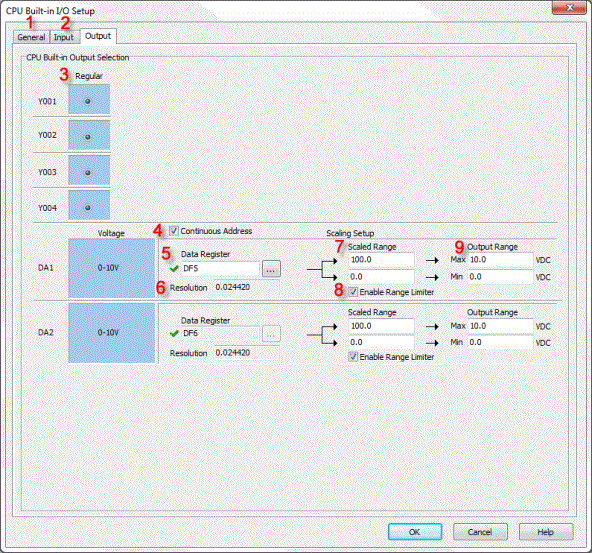
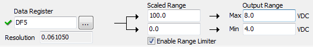
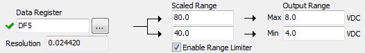
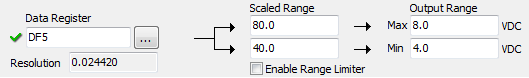

| CPU Built-in I/O Setup: Output Tab (Ethernet Analog CPU, Voltage Only Type) |
|
The CPU Built-in I/O Setup Output Tab dialog gives the user access to setup parameters that are available exclusively for the Built-in outputs. When the Output Tab is selected the window shown below is displayed.


1 General: Selecting the General Tab displays the CPU Built-in I/O General options.
2 Input: Selecting the Input Tab displays the CPU Built-in I/O, Input setup options.
3 Regular: This is the default selection and sets the Outputs to their normal operation. No setup is required here because there are no other options at this time
4 Continuous Address: If you want to assign continuous DF memory addresses to DA1 and DA2, please check this option.
5 Data Register: Enter a DF address to store the scaled analog value. In the CLICK PLC, all analog data are handled as floating point numbers. So you can select only DF memory addresses.
6 Resolution: The CLICK software automatically calculates the resolution of the scaled data according to the bit resolution of the analog output and the scaling setup, and display the value here.
7Scaled Range: Enter the maximum and minimum scaled values.
In the following example, the Scale Range is set to 0.0 - 100.0 and the Output Range is set to 4.0 - 8.0V. This means analog value 0.0 in DF5 memory address will be converted to output voltage 4.0V and analog value 100.0 will be converted to output voltage 8.0V. When the DF5 memory address has analog value 50.0, it will be converted to output voltage 6.0V.


8Enable Range Limiter: By checking this option, the analog values that are outside of the Scale Range will be adjusted to the minimum or maximum value of the Scale Range.
1. Enable Range Limiter is ON.


2. Enable Range Limiter is OFF.


9 Output Range: Enter the maximum and minimum Output Range after scaling.
CPU Built-in I/O Setup: Input Tab (Ethernet Analog CPU, Voltage Only Type)
CPU Built-in
I/O Setup: General Tab (Analog CPU)